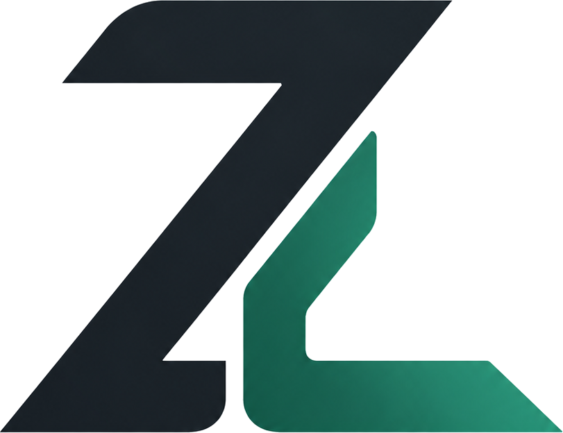

I'm David Ashe — a software developer, DevOps practitioner, QA specialist and engineering student. I build digital products, automate systems, test software and solve technical problems from multiple perspectives.
Different disciplines teach different ways of thinking. I use that to solve problems.
I'm a student, developer and builder interested in the intersection between technology, engineering and business.
My work spans web development, backend systems, DevOps, software QA, security testing, automation and engineering.
I don't want to just write code that works. I want to understand how the entire system behaves, where it can fail and how it can be improved.
Turning ideas into functional digital products.
Getting systems into reliable environments.
Finding weaknesses before users do.
Applying analytical thinking to complex problems.
Areas I'm actively building skills, products and experience in.
Responsive websites and web applications using modern frontend and backend technologies.
APIs, databases, authentication, queues and server-side architecture.
Deployment, Docker, environments, infrastructure and automation.
Manual testing, API testing, E2E testing, performance and accessibility.
Responsible web security assessment, reconnaissance and configuration testing.
Engineering study, structural concepts and analytical problem solving.
Whether the system is physical or digital, understanding how its components interact matters.
Structural engineering teaches a useful lesson: systems need strong foundations.
The same thinking applies to software architecture, databases, infrastructure and quality assurance.
Data, infrastructure and environments the rest depends on.
Architecture, APIs and how components are wired together.
How stress moves through the system once real users hit it.
Products, platforms, experiments and systems.
A website quality assessment platform that analyzes performance, SEO, accessibility, forms, links and security.
The system combines crawling, page analysis, rule-based findings, scoring and report generation.
A smart commerce platform designed to give vendors online storefronts while keeping customer orders simple and connected.
A student association platform designed to manage organizational information, executives, departments, news and content.
An educational platform focused on short-answer practice and learning workflows.
A concept exploring real-time lecture hall occupancy and smarter use of physical spaces.
Experiments involving AI, automation, APIs, developer tooling and workflows.
A system isn't finished just because the happy path works.
Testing software from the perspective of users, developers and the system itself.
Responsible testing focused on discovering weaknesses and improving system security.
My toolkit changes as the problems I'm solving change.
The goal isn't to know everything. It's to keep becoming better at solving problems.
Began developing websites and learning how software is structured from the frontend upward.
Started working with backend systems, databases, APIs, authentication and application architecture.
Began exploring QA, automation, security testing, performance and reliability.
Exploring DevOps, infrastructure, automation and the systems that keep software running.
Combining technology, engineering and business thinking to create useful products.
Understand the actual problem before choosing a technology.
Think about components, dependencies, data and failure points.
Turn the architecture into a functional and usable product.
Find weaknesses, fix them and iterate until the system becomes stronger.
Have a website, software product, QA project, automation idea or technical problem? Let's talk about it.